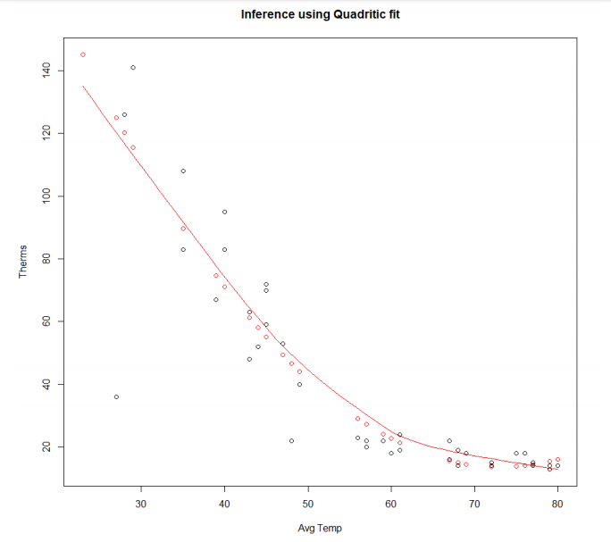
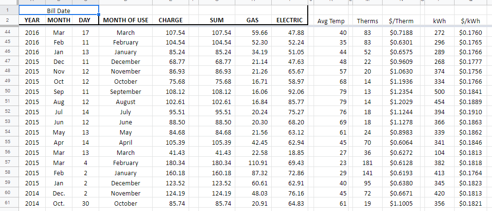
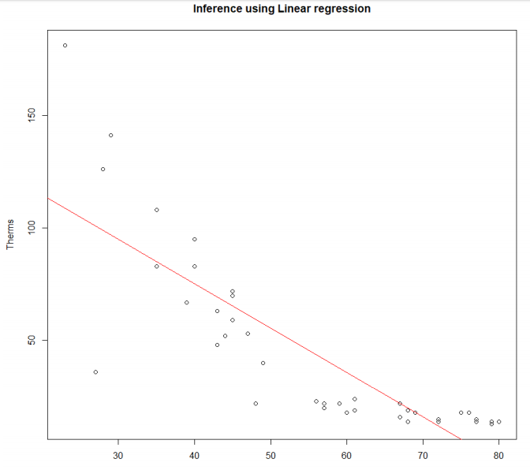
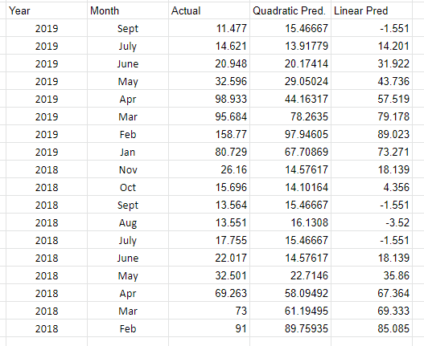

Predicting My Brother's Utility Costs
by John LaGue
Posted on October 4th, 2019 at 3:45pm EST PM

This is a brief post about a quick analysis I did in the winter of 2018 of my brother, Ben LaGue's, meticulous Jersy City apartment utility records.
My process:
-----------------------------------------------------------------------------------------------
Taking a look at the data:
My brother seemingly tracked everything! Not only did he track what he and his roommates were paying each month, but he tracked exactly how much gas and electricity they used too!
Each month he would record the average monthly temperature, the KWh used, the amount of gas used (Therms), the price of gas at the time and the price of a kWh at that time. He has data going back to 2012! He shared his Google Sheet and asked me if I could "Data Science It". I was happy to see what I could do. He was only really interested in gas usage too, since that's what fluctuated the most.
He had already created these nifty timelines of usage and prices (seen below). So a part of the exploratory portion was already complete!


I messed around with some histograms, but intuition would tell you anything you could see in the histogram. Winter months had higher bills and higher gas usage. As average temperature increased usage seemed to decrease. All very intuitive. But could I actually predict the exact amount used each month?
Making Models
I began by splitting the data 70/30 for training and testing by randomly sampling. Then I built a very basic linear regression model in R. I played around with the variables and found that the only statistically significant variable was Average Temp. So I created a single variable regression using average temp to predict gas usage. Unfortunately I do not have the original R file, but I believe it was explaining about 70% of the variance. I knew I could do better.
I plotted the results and saw an obvious exponential or quadratic decline in the amount of gas used as the average temperature increased. So, I thought I would take the quadratic version of my earlier regression. This improved the results significantly. I was pretty happy with the results, but I thought I would try my favorite model, random forests, real quick. The random forest model performed about the same as the quadratic (see chart below), but it reduced interpretability for my brother so I dropped it.

Now that I was firmly happy with the results I sent some screen shots of the charts to my brother and a simple equation he could use to calculate the predicted gas usage each month.
$$gas = {293.41-7.64839*AvgTemp+0.05228*(AvgTemp)^2}.$$Results
About 1.5 years later I randomly remembered I did all this as I stared at a thermostat. I had never known if my brother had used the model or what even happened to it. I quickly went back to find that Google Sheet he originally sent me. Not only was it still there but my brother had continued to add to it every month! So I could actually see how my model had stood up to the rest of 2018 and early 2019. You can see each of my models predictions compared to the actual amount of gas used. For the most part it did pretty well! The Mean Abs. Error was ~12, but the Median was 5.7. You can see that there were two months in winter 2019 that had unprecedentedly high usage which threw things off. The mean error in cost predicted was about $10.50 with a median of about $6.50 error. Not too bad!
Moving Forward
One feature I did not test is "Previous Month usage". I could reformat the data so there is a feature giving the usage of the previous month. This may be an interesting way to predict an anomalous month coming. In fact, if he were actually using the model it is how he would have to predict the next month since he would not be able to input the average temp of the month until the month is over. If his bill comes much later then that could be useful, but it would be more interesting if we could make an earlier prediction.
Also, including more information in temperature such as average low and average high rather than a total average would possibly improve the accuracy.